Soldiers Moving with 699 Triangles
Building soldiers together through QUORUM, from 2D to verification in Godot
October 29, 2026 · Creating EASTWAR's 3D unit types and load testingYesterday, the forest led us into an emergency QUORUM meeting in the middle of the night. Today I focused on making the soldiers who would move across the battlefield of EASTWAR (project name: Samguk WAR): spear-carrying infantry, bow-wielding archers, gunners, and mounted cavalry. The starting point was the 2D draft of a base soldier I made with ChatCoach.
Creating a soldier I liked in a picture and getting many of them moving together in a game were different tasks. They had to stay lightweight without losing their appearance, and their hands had to line up when holding weapons. Running and attack motions also had to suit the actual pace of the game. Today I divided these tasks among the coaches and checked the results one by one in Godot.
From a 2D draft to an A-pose, then to 3D
First, Grok Coach converted ChatCoach's 2D draft into an A-pose. With the arms slightly away from the body and extended downward, I put that image into Tripo to create a 3D model. We could now see how the armor and clothing we had viewed from the front continued around the sides and back.

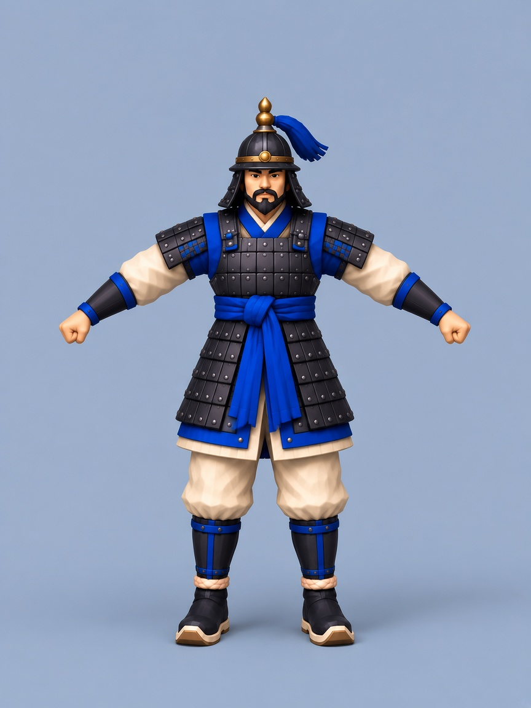

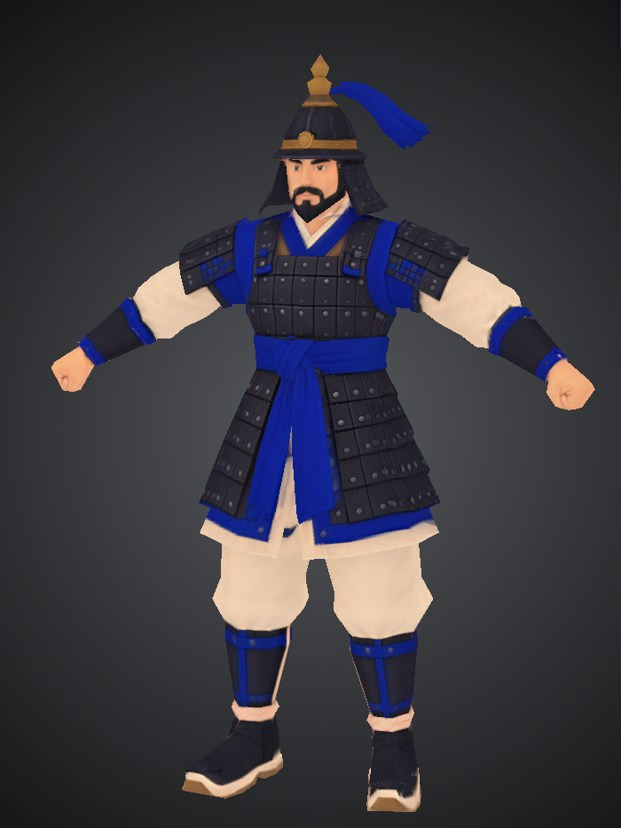

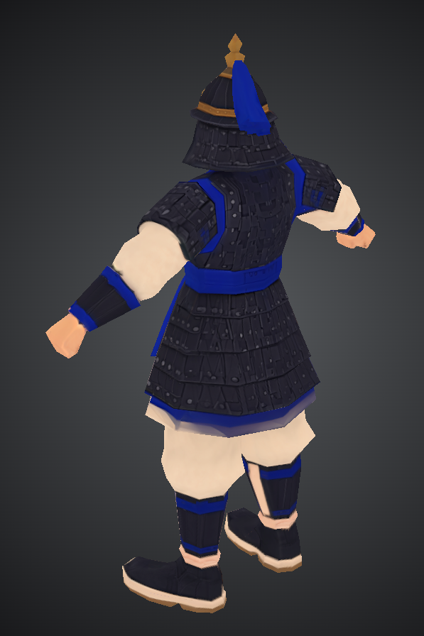
One soldier in 699 triangles
The surface of a 3D model is made up of small triangles. Reducing their number can make the model lighter, but reducing it too far can damage the body's silhouette or the shape of its armor. The detail needed for a close view of one soldier also differs from what is needed when placing dozens on a battlefield.
Once again, I discussed the direction with the coaches in QUORUM. Grok Coach refined the 3D model obtained from Tripo using ChatCoach's 2D soldier draft, reducing the base soldier's body to 699 triangles. At the size I intended to use in the game, enough of the character and form I wanted remained. More than simply lowering a number, what mattered was whether it was still a soldier I wanted to use.
Grok Coach's hands-on contribution was particularly helpful today. Grok did more than refine the model, directly working on rigging and animation as well. That made it much easier to receive revised assets, compare them, and move on to the next decision. I could feel the time savings, and it helped us maintain quality while continually checking the motion and form.
Giving a lightweight soldier movement
Rigging means putting a skeleton inside the soldier so the body can move. This base soldier uses 22 bones. Motions such as walking, running, thrusting, and firing a gun were downloaded from Mixamo and applied. Grok Coach retargeted these motions to our soldier's skeleton and corrected awkward parts. We prepared seven motions in all: two idles, walking, running, a spear thrust, archery, and gunfire.
We could not simply use the imported motions unchanged. We fixed the bow-drawing hand where it clipped into the face, and adjusted the motion so it could return after firing and loop. For the long spear thrust, we made a separate short version and adjusted its playback speed to match the game's attack timing. Even with a lightweight model, awkward details like these can stop a soldier from feeling as though it is moving properly.

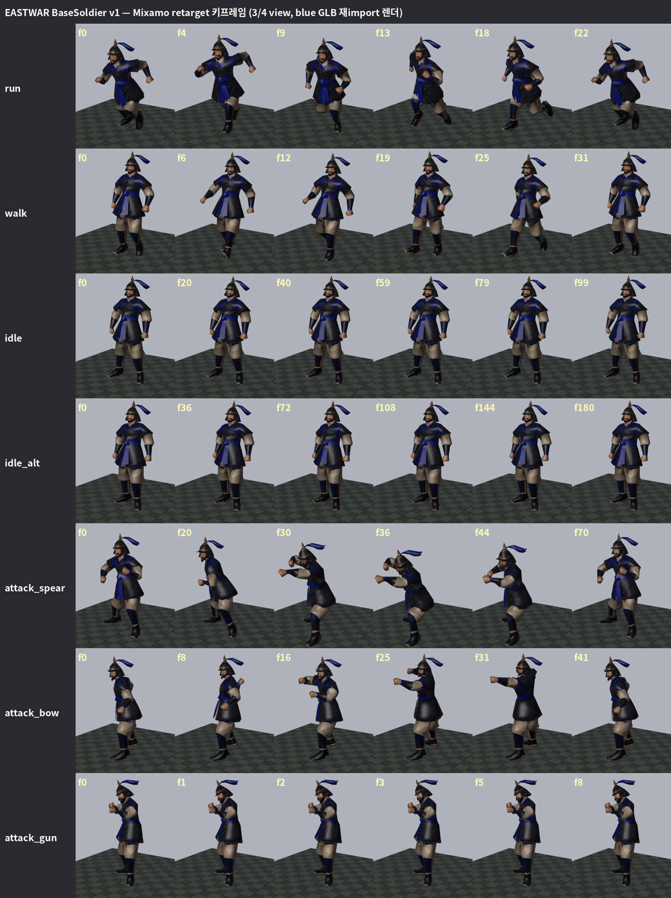
The files Grok Coach produced went on to Claude Coach and Claude Code. Claude Coach, who is Claude, organized the integration order and the items to check, then reviewed the reports. Claude Code put the files into Godot and built the test scenes. I ran the scenes with F6 and watched the blue-army and red-army soldiers walk, run, hold their weapons, and attack.

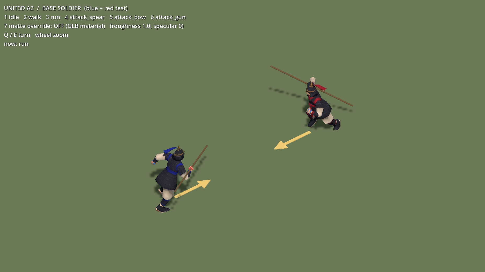
Different weapons for the same soldier
For the weapons, I also prepared draft images first. We developed the shapes of the bow and quiver, gun, and spear separately, then refined them for the game while checking their size and movement when attached to a soldier. The images below are the weapon drafts that served as our starting points.

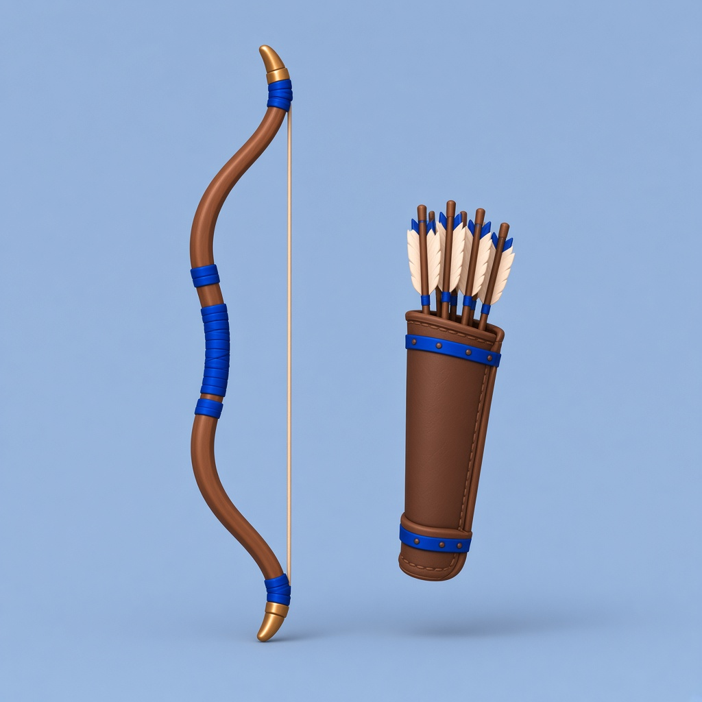

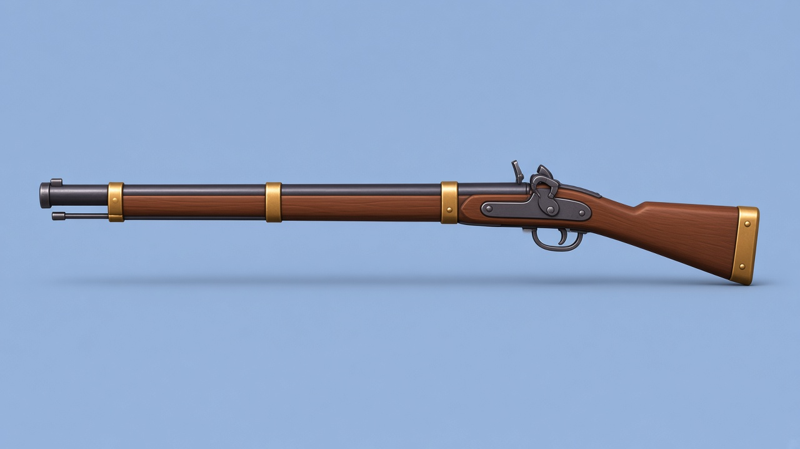

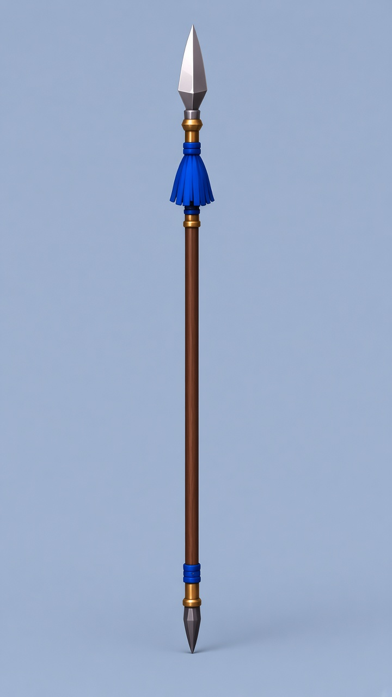
We decided to keep the spear, bow, quiver, and matchlock gun in separate files rather than combine them with the soldier's body. By swapping weapons and motions on the same base soldier, we could create infantry, archers, and gunners. It also helped that we would not need to change the entire soldier again whenever we revised a weapon.
That meant we had to get the attachment positions right. We set each weapon's origin at its grip and added reference points named Tip at the spear tip, Muzzle at the gun muzzle, and ArrowNock at the arrow's reference position. These points are used to attach weapons to the hands and check firing positions and directions. The quiver attached to a bone on the back.
Comparing its proportions on screen, we shortened the spear to 1m. Even then, the shaft looked too thick when the soldier held it. So we reduced its thickness once more and applied a version with a shaft diameter about 62% of the previous one. We adjusted the thickness while retaining the length, grip origin, and tip reference point. The plan is to carry it in one hand normally and use both hands when thrusting. We also compared the shiny material in Godot. The final defaults were roughness 1.0, metallic 0, and specular 0 for a matte finish.

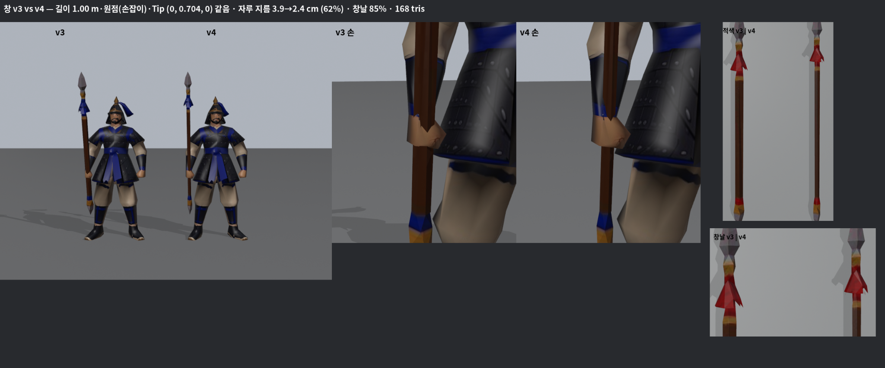

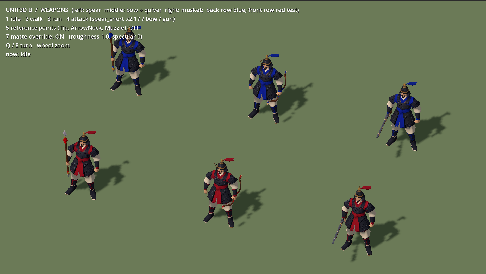
What happens when 90 soldiers run?
With the appearance and motions chosen, it was time to move many soldiers at once. In the load test Claude Code built, we measured performance while varying soldier count, weapons, shadows, and camera distance.
The test PC had a GTX 1660 and i5-9400F, at a resolution of 1920×1080. VSync was off, and the scene contained only a flat floor, with no terrain or trees. With 90 spear-carrying infantry running and shadows enabled, the average was about 296~308 FPS, with each frame taking about 3.2~3.4ms. A test with 180 soldiers still averaged about 167 FPS, or about 6.0ms per frame.
Under these conditions, there was ample headroom even with many 699-triangle soldiers moving. Of course, we still need to measure performance on the actual battlefield with terrain, forests, and the HUD. But we had evidence to move to the next stage with our current structure of base soldiers and separate weapons.
There had also been concern that separate weapons might greatly increase draw calls, the number of drawing operations. Yet adding 90 spears increased the measured count by 3 with shadows off and about 9~15 with shadows on. That differed from the expectation that each weapon would necessarily add one call. Discussing the issue in QUORUM and checking it with actual measurements let us keep the weapons separate.
We checked the bows and guns all the way through firing
For archers and gunners, we could not stop at how they looked holding weapons. We also checked whether arrows appeared and flew in time with the hand motions, and whether firing effects appeared at the gun muzzles. Comparing the arrow's reference direction and the muzzle position, then adding sound, made the ranged units feel distinctly alive.
We tested the ranged effects with 36 soldiers. After 30 consecutive volleys, we also checked whether the number of spawned effect nodes returned to its initial state. In this repetition test, we did not see effects remaining and accumulating. After seeing and hearing the firing myself, I said, “Very good.”

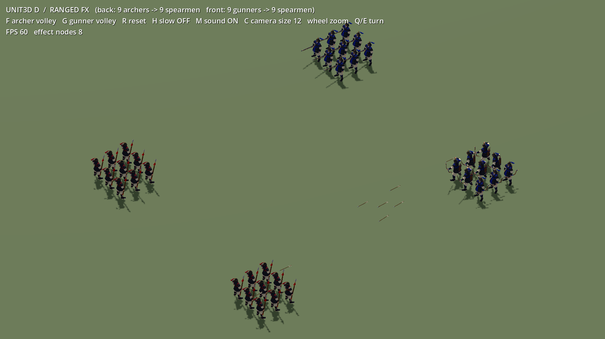
Putting a soldier on a horse
For the cavalry, we started by preparing a horse. The horse, converted from a 2D image to 3D in Tripo and then refined, ended up at 801 triangles. According to Grok Coach's work log, the imported horse motions were difficult to use as they were, so the idle, walk, and run were newly made. We also corrected jolting while walking, the hind legs spreading apart, and legs that looked bent awkwardly during idle.
The horse's running looked particularly strange from behind. Grok Coach refined the hind-leg movement again, and we compared rear-view frames of the run side by side. Reducing the excessive spread of the hind legs was another necessary part of preparing the cavalry.

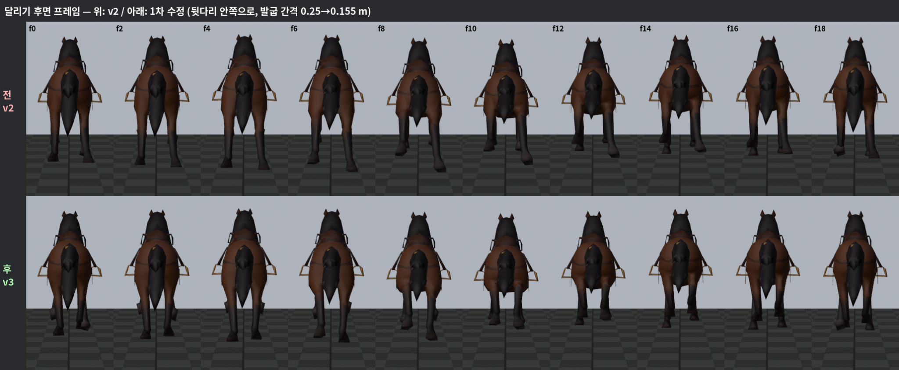
The rider used the same base soldier's skeleton. The left hand stayed near the reins, the right held the spear, and the feet were aligned with the stirrups. We raised the stirrups to suit the soldier's short legs. The rider was attached to the saddle's Saddle reference point so it would follow the horse's movement.
For the spear thrust, we kept the rein-holding hand and legs fixed and completed the attack pose by leaning the upper body 15 degrees farther forward than the base soldier's pose. After comparing upright and forward-leaning versions from several angles, I chose the leaning thrust. Claude Coach also calculated and checked the gap between the spear tip and the horse's head in the delivered assets. The same workflow continued with cavalry: Grok Coach produced the assets, Claude Coach reviewed the structure and numbers, and Claude Code applied them in Godot.

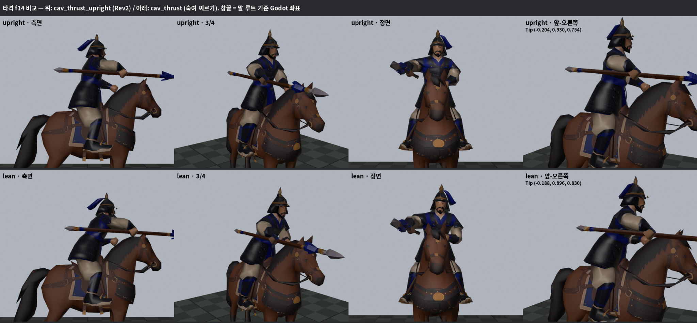

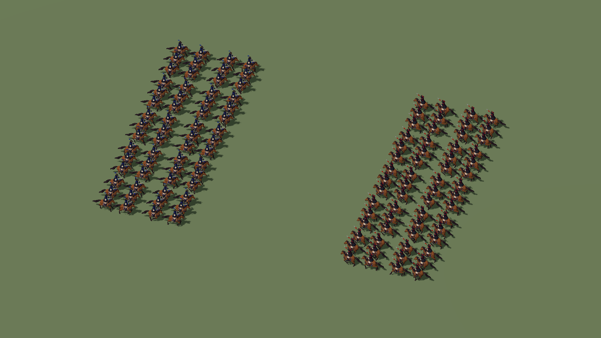
The cavalry tests are still running as I write this. We have checked the assets and attack pose and have a Godot test screen, but I am still waiting for the final cavalry load-test results. The infantry performance figures cannot simply be carried over to cavalry.
Bringing the direction chosen in QUORUM onto the screen
It was clear where QUORUM helped today. Starting from ChatCoach's 2D draft, we reviewed the soldier's lightness and quality together. Grok Coach handled the A-pose, model optimization, rigging, and application and correction of Mixamo motions. The horse's motions were created separately. Claude Coach organized this into an integration sequence and verification checklist, and Claude Code implemented and tested it in Godot. I watched the results and chose the appearance and motions.
According to Claude Coach's records, the infantry load-test, ranged-effects, and thinner-spear replacement stages all passed the 72 existing validators and 196 Godot tests. We were also checking that adding the new soldiers had not broken existing features. Each work branch was pushed to the remote repository, but the full merge and connection to the actual 3D battlefield are still ahead.
Next, I need to check the cavalry test results and connect the soldiers to a battlefield with terrain and trees. We will align soldier scale and orientation, troop count per unit, attack handling, and firing effects, then measure performance again in that state.
What we gained today was one soldier made of 699 triangles, and a production process that lets that soldier move as several unit types. The work progressed as we gathered opinions in QUORUM, Grok Coach directly refined what needed changing, and Claude Coach and Claude Code checked it in the engine. Today's most welcome result was seeing a soldier on the actual screen that retained the look I wanted while moving lightly.